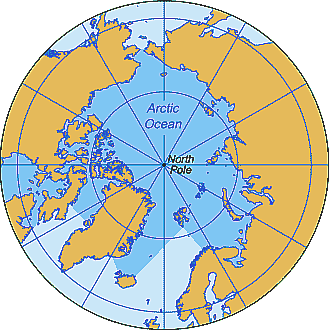

Océano Ártico

-
Se extiende desde la costa antártica hasta los 60° S, límite convencional con el océano Atlántico, el océano Pacífico y el océano Índico.
-
Es el penúltimo océano en extensión.
-
Rodea completamente la Antártida y tiene una superficie de 20.3 millones de km²
Regresar